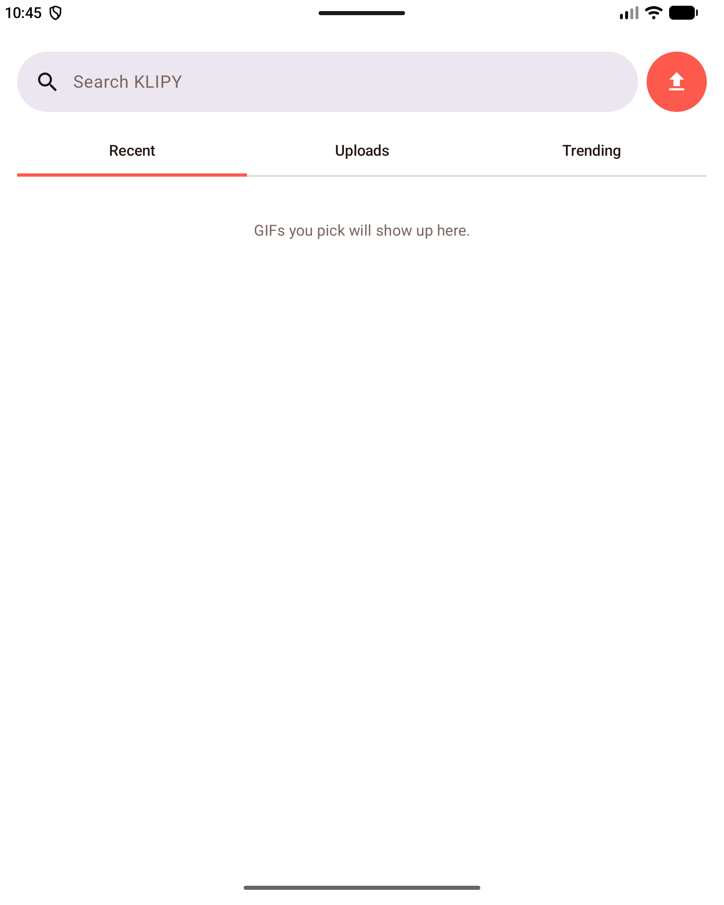
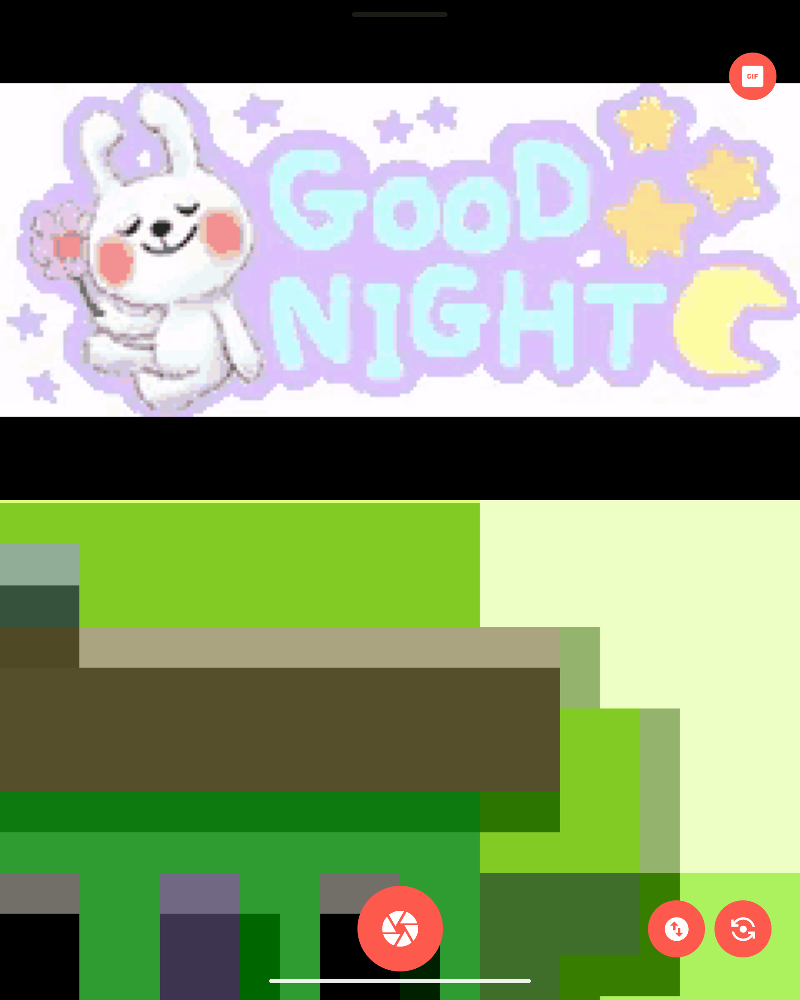
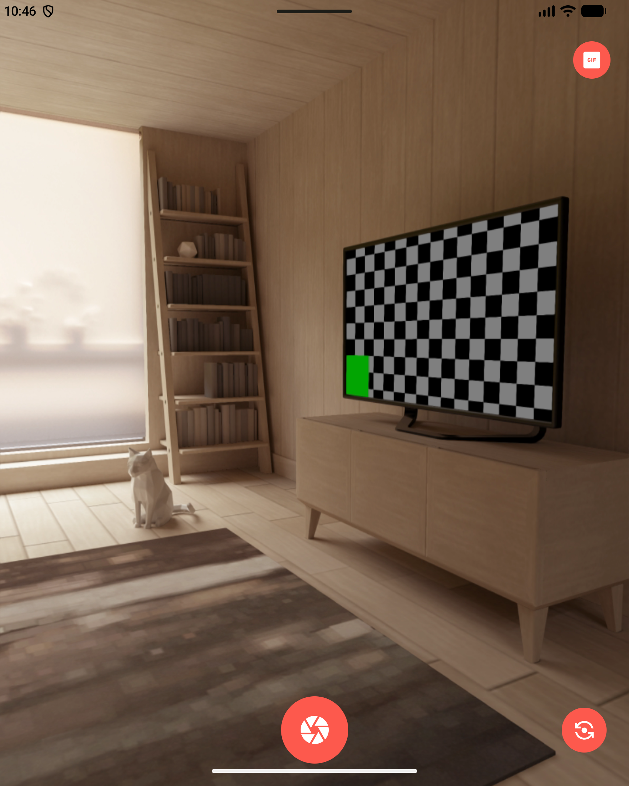

Kids won't look at the camera.
✨
So we gave it something worth looking at.

Pick any GIF.
Search, browse, or upload your own.

Loops right where they're looking.
On the Z Fold, that's the outer screen — this phone just has one, so it splits the view instead.

✅
Tap. Got it.
LookHere
Finally, a good picture.